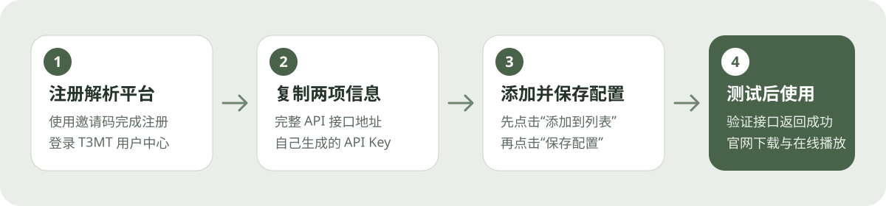
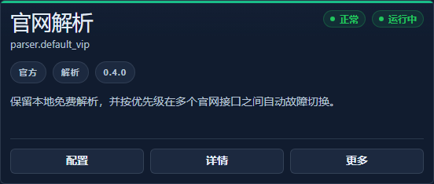
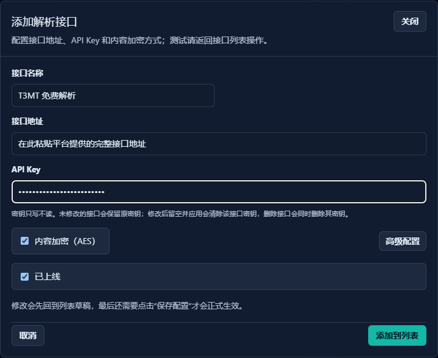

T3FAP 3.0 · 可选增强功能
官网解析插件
配置教程
使用 T3MT 解析平台提供的 API 接口和 API Key，完成官网解析配置，即可使用官网下载和在线播放服务。
- 2 项 API 信息
- 2 次保存
- 1 次接口测试

01 · 准备 API 信息
注册平台，复制接口和 API Key
T3MT 是推荐的可选第三方解析平台，可按平台当前规则免费注册使用。邀请码可向群友获取。
-
打开用户中心并注册
访问
http://api.t3mt.com/，按页面提示填写注册信息和邀请码。邀请码不是 API Key。 -
登录并生成 API Key
进入用户中心，找到 API 或解析接口相关页面，按页面提示生成自己的 API Key。
-
分别复制两项信息
复制平台展示的完整 API 接口地址和刚生成的 API Key，暂时保存在自己的安全位置。
必须复制平台提供的完整接口，不是用户中心首页，也不要自行添加接口路径。
每个账号单独生成。不要借用他人密钥，也不要把密钥截图发到群聊。
02 · 打开官网解析
从插件中心进入配置
登录 T3FAP 后，在左侧菜单打开“插件中心”，找到“官网解析”。
-
确认插件可以运行
如果插件尚未安装或启动，先完成安装并点击“启动”。卡片显示“运行中”后再继续。
-
点击“配置”
在“官网解析”卡片上点击“配置”，进入“官网解析配置”窗口。
-
点击右上角“添加”
在“官网解析接口”列表中新增一条接口，不要改动其他无关插件。

03 · 填写并保存
填写两项信息，完成两次保存
“添加到列表”只保存当前草稿；返回接口列表后，还必须点击“保存配置”才会正式生效。

- 接口名称
- 便于自己识别即可，例如“T3MT 免费解析”。
- 接口地址
- 粘贴第一步复制的完整 API 接口地址，不要填写视频网址。
- API Key
- 粘贴自己生成的密钥。密钥只写不读，保存后不会明文显示。
- 内容加密（AES）
- 新版本默认开启。先保持默认，只有平台明确要求关闭时才调整。
- 状态
- 保持“已上线”。高级配置可先使用默认值。
04 · 测试并使用
先测试接口，再使用解析服务
测试通过后，返回支持官网解析的资源详情页，即可按页面提供的入口使用官网下载和在线播放。
-
填写“测试媒体地址”
这里填写要解析的官方视频页面地址，不是 API 接口地址。
-
点击对应接口的“测试”
等待测试结束，检查“返回结果”和“最终媒体地址”。
-
测试成功后再使用
回到资源详情页选择官网下载或在线播放。实际入口以资源类型和页面能力为准。
05 · 常见问题
配置后仍然不能用？
先按下面逐项检查，大多数问题来自地址填错、密钥失效或漏掉最后一次保存。
把用户中心首页填进“接口地址”为什么不行？
插件需要的是平台提供的完整 API 接口，不是 http://api.t3mt.com/ 首页。请回到用户中心复制专门展示的接口地址，不要自行猜测或拼接路径。
已经点击“添加到列表”，为什么还是不生效？
这一步只把接口加入当前草稿。关闭新增窗口后，还要在官网解析接口列表中点击“保存配置”，看到保存成功提示后再测试。
“测试媒体地址”应该填写什么？
填写你想解析的官方视频页面地址。API 接口用于连接解析平台，测试媒体地址用于验证解析结果，两者不能填反。
API Key 可以发到群里让别人帮忙配置吗？
不可以。API Key 相当于账号凭据，泄露后可能被他人占用额度。已经泄露时，请立即在用户中心重新生成，并同步更新插件配置。
不配置这个第三方平台，还能使用 T3FAP 3.0 吗？
可以。官网解析是可选增强功能，不配置它不影响 T3FAP 3.0 的免费政策和核心功能独立运行。第三方平台的可用性与免费规则以该平台当前页面为准。
有多个解析接口时，会按什么顺序使用？
接口按优先级从小到大依次尝试，当前接口失败时可自动切换到下一个“已上线”接口。可在接口列表拖动排序，调整后记得再次保存配置。